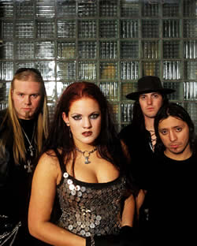
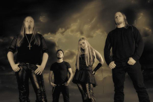

No começo de 2001, Morten Veland, integrante
e fundador do Tristania,
banda referência mundial do cenário Gothic/Doom Metal,
deixa sua banda para montar o Sirenia. Conhecido por
uma legião de fãs ao redor do mundo, Veland não
demorou muito a despontar com sua nova banda norueguesa e mostrar
seu talento com a seqüência do estilo que o consagrou,
mantendo os vocais guturais e as guitarras estilizadas como sua
marca registrada.
Após
sua saída do Tristania, Morten restabelece contato com
sua antiga gravadora, a Napalm Records, e seu produtor, Terje
Refnes do Sound Suite Studios. Ele convida para integrar a banda
Kristian Gundersen, grande amigo, que se encaixa perfeitamente
nas inclinações musicais de Morten. Gundersen é
guitarrista e executa partes de vocais limpos. Também é
integrado a banda, o tecladista Hans Henrik Varland, grande músico
vindo de Stavanger, a cidade natal da banda.
Logo em seu trabalho inicial, At Sixes and
Sevens gravado no final de 2001 e lançado no começo
de 2002, o Sirenia já atrai grande público e começa
sua trajetória de sucesso. O álbum contém
9 músicas e é marcado pela mistura do doom/black
metal com música clássica e algumas passagens mais
"darks". Para fazer os vocais femininos foi convidada
a fabulosa cantora francesa Fabienne Gondamin. Também contribui
com a gravação do álbum, o famoso violinista
Pete Johansen (The
Sins of Thy Beloved, The Scarr, Tristania), dando um toque
especial de emoção às canções.
O coral Francês foi contratado para executar várias
partes no opus, e os cantores clássicos fizeram um maravilhoso
trabalho. Igualmente, Jan Kenneth Barkved (Elusive), emprestou
sua voz ao Sirenia e adicionou seus vocais limpos que foram acrescentados
para uma maior diversidade desse lançamento.
Com tanto empenho e tantas feras da música,
At Sixes and Sevens acaba sendo uma grande obra com belos arranjos
e uma atmosfera freqüentemente alternada entre o peso das
guitarras e urros e a melancolia dos vocais clássicos e
violinos.
Em 2003 o baterista Jonathan Perez e a bela Henriette
Bordvik são incorporados à banda. No mesmo ano a
banda sai em turnê para divulgar o álbum.
No final do mesmo ano começam as gravações
do novo álbum, que viria a se chamar An Elixir Of Existence.
Lançado no começo de 2004, esse novo trabalho, aparenta
ser uma continuidade do primeiro. As composições
continuam bem arranjadas e produzidas, com muitas variações
melódicas e cheias de detalhes. As guitarras, entretanto,
estão mais presentes e distorcidas do que nunca e a linda
voz de Henriette contribui muito para a boa sonoridade das canções.
Os destaques ficam com A Mental Symphony, In My Darkest
Hours e com Star-Crossed, que chega a lembrar Dimmu
Borgir.
Em agosto de 2004 o guitarrista Kristian Gundersen
se desliga da banda, pensando em dedicar-se a seus outros projetos.
Pouco depois, é o baterista Jonathan Perez que deixa a
formação. No final de 2004 o Sirenia entra em turnê,
agora já com o baterista Roland Navratil, do Edenbridge.
A banda se apresenta juntamente com Tiamat, Theatre
of Tragedy e Pain.
Em fevereiro de 2005, o Sirenia
lança um EP intitulado Sirenian Shores, com apenas
cinco faixas, sendo três inéditas. O EP agrada bastante
os fãs do Sirenia e serve como um aperitivo do que virá
pela frente.
Em
setembro, a vocalista Henriette Bordvik deixa o Sirenia. Apenas
em abril de 2006, a banda anuncia a nova vocalista, a dinamarquesa
Monika Pedersen. Em meados deste mesmo ano, os músicos
dão início aos trabalhos para o novo álbum,
que seria concluído apenas em setembro.
Finalmente, em fevereiro de 2007, o Sirenia lança
oficialmente o álbum Nine Destinies and a Downfall.
Neste novo trabalho, as nove faixas são bastante variadas
entre si; mas não é possível afirmar que
o Sirenia tenha abandonado o estilo dos trabalhos anteriores.
Mesmo assim, alguns elementos eletrônicos somados ao timbre
de voz de Monika, atribuem uma atmosfera diferente a que os ouvintes
mais atentos estão habituados.
Em março de 2007, são disponibilizados
na Internet, os videoclipes das faixas The Other Side
e My Mind’s Eye, do trabalho mais recente. Nos
meses seguintes a banda se apresenta em festivais na Noruega,
Alemanha, Dinamarca, entre outros. Entretanto, em novembro, Monika
anuncia sua saída da banda alegando "diferenças
musicais". Dessa forma, o Sirenia cancela uma turnê
que seria realizada juntamente com a banda sueca Therion.
O ano de 2008 foi um período de mudanças
e transições. Em abril, a banda anuncia a espanhola
Ailyn, de 26 anos, como nova vocalista. No mês seguinte,
o guitarrista Bojnar Landa deixa a formação para
dedicar-se aos estudos. Michael Krumins é anunciado como
novo guitarrista.
O novo trabalho é lançado em janeiro
de 2009. The 13th Floor traz nove faixas inéditas
e as primeiras participações de estúdio de
Michael e Ailyn. O álbum resgata um pouco as melodias e
arranjos mais complexos dos primeiros discos. Ailyn demonstra-se
competente e segura nos vocais; enquanto as letras mantém
a linha introspectiva e agressiva comuns às composições
de Veland.
Desde o início de sua carreira, o Sirenia
provou não ser uma "continuidade" do Tristania,
ou apenas mais uma banda a integrar o vasto cenário do
Metal noruguês. A banda tem uma identidade própria
e consolidada ao longo de seus álbuns, singles e turnês.
Por
Spectrum
Downloads
Disponíveis: